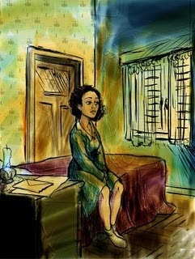

Personajes en Emma Zunz
A continuación se estará mostrando una tabla conteniendo información general sobre los personajes.
|
|
|---|---|
Emma Zunz - Personaje principal |
Ella cumpliría 19 años en abril y trabajaba en la fábrica de tejidos Tarbuch y Loewenthal. Su padre había muerto y se decía que ella no recordaba a su madre. De esta manera, se puede asumir que no fue o se sintió criada dentro de una familia nuclear (compuesta de la presencia de una madre, padre y sus hijos) y que a la temprana edad de adultez era una mujer ya independiente. Algunos rasgos de personalidad pueden ser: impaciente, atrevida, fiel a sus creencias, emocional, entre otros. Ella se prostituye con el pretexto de venganza lo cual lleva a la conclusión de que tenía una condición mental. |
Elsa - Personaje secundario |
Era una persona que iba al Club de Mujeres y hablaba del noviazgo. Aparenta tener una amistad con Emma pero la misma no era transparente ("Emma, desde 1916, guardaba el secreto. A nadie se lo había revelado, ni siquiera a su mejor amiga, Elsa Urstein."). Se puede decir que Elsa sirvió para enfatizar que la protagonista no era cercana con nadie, ni su mejor amiga. |
Loewenthal - Personaje secundario |
Es uno de los dueños de la fábrica. Era para muchos un hombre serio. Era un viudo que vivía en los altos de las fábricas. Su pasión era el dinero y le temía a los ladrones. Era muy religioso ya que “creía tener con el Señor un pacto secreto, que lo eximía de obrar bien, a trueque de oraciones y devociones”. |
Emmanuel Zunz - Personaje secundario |
Se cambió su nombre de Emmanuel Zunz a Manuel Maire y vivía en Brasil. Su muerte es debido a una "sobredosis de un fuerte veronal" lo cual habla de su mentalidad inestable antes de morir (el narrador lo llamó suicidio). En la última noche con su hija, le juró a Emma que el ladrón fue Loewenthal. La relación del padre con la madre de Emma es de mucha incertidumbre. |
El amante temporero de Emma - Personaje secundario |
Era un hombre grosero y más bajo que Emma. Emma lo escogió ya que al ser una persona horrible, no se le mitigaría el miedo de los hombres ("quizá más bajo que ella y grosero, para que la pureza del horror no fuera mitigada"). Era un tripulante a bordo del barco Nordstjärnan, de Malmö. El hombre era sueco o finlandes y no hablaba español. |
Representación de la protagonista, Emma Zunz
